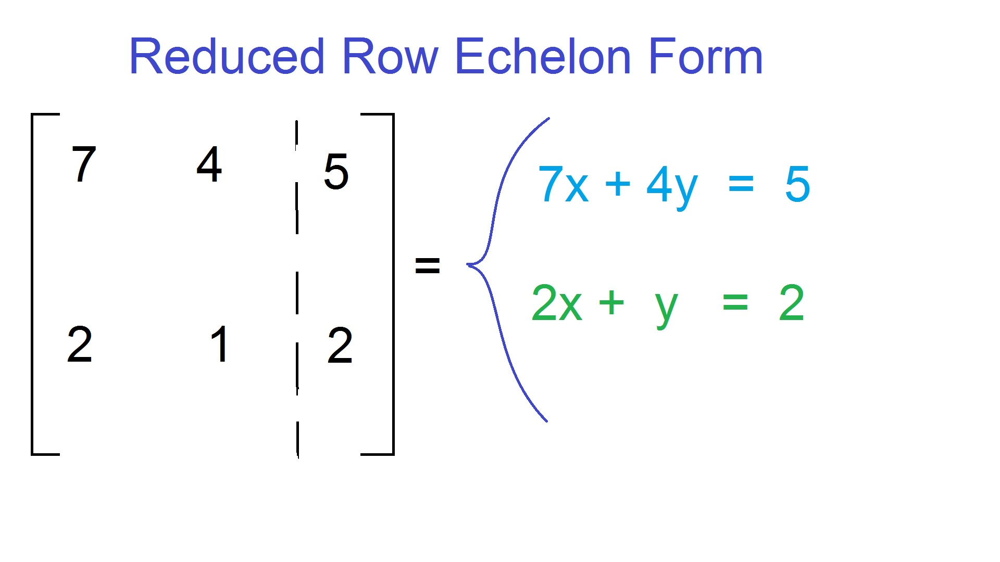
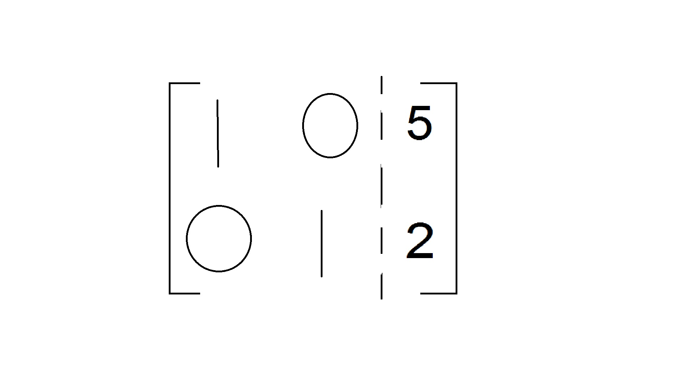
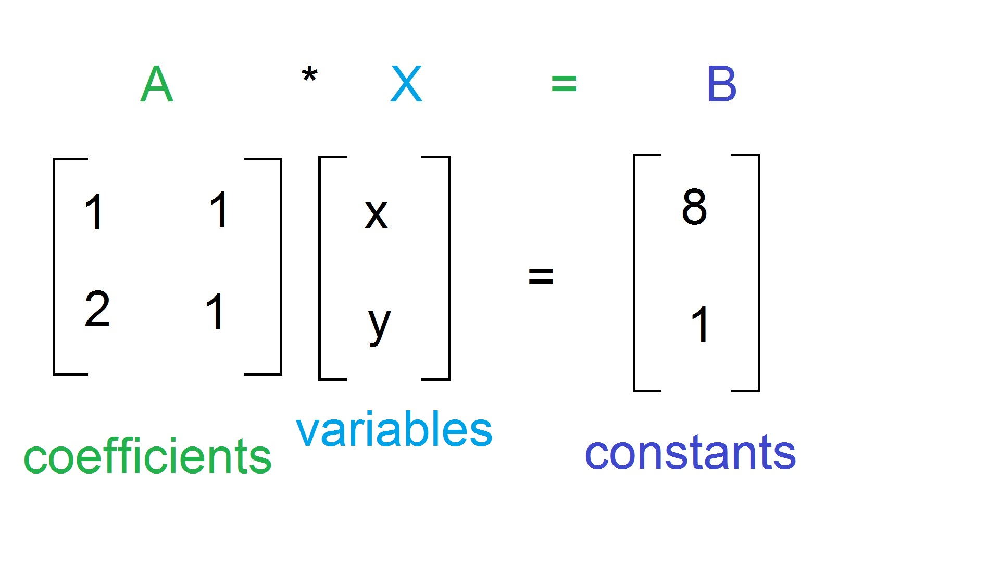
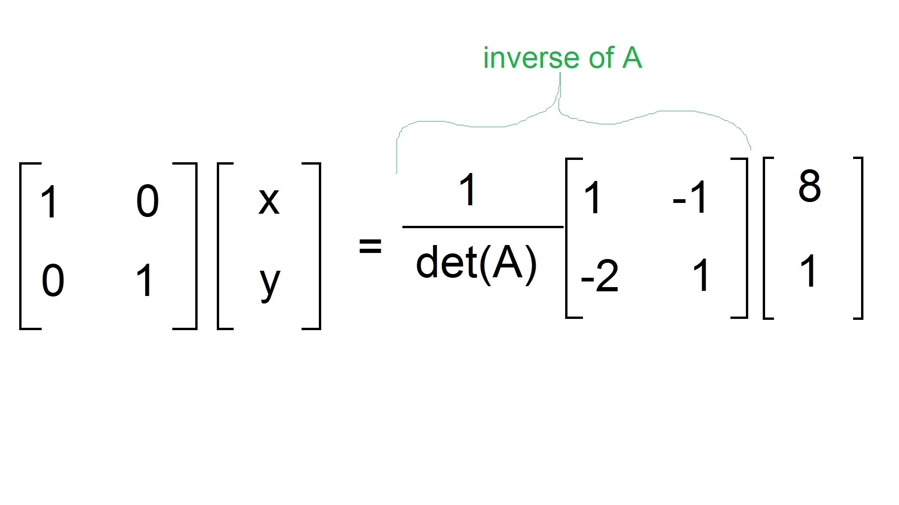

There are two ways that I know of to solve a system of equations with matrices
I personally like using Row Reduction because it relates back to previous concepts better, and makes more sense
Reduced Row Echelon Form is the identity matrix on one side of the augmented matrix, and the constant coefficients on the other
Row Reduction is doing operations on individual rows to get the identity matrix on one side of the augmented matrix, and the constants on the other.
This is almost exactly like the elimination method that we used earlier in Algebra to solve a system of equations.
Example Below:
Above is what the end result should hopefully look like. It is telling us that x = 5, and y = 2 because of the identity matrix on the side.
This makes a lot of mathematical sense, especially when you make the connection to elimination.
The second way to solve a system of equations using matrices is by using the inverse. It is set up like this:
Both sides are then multiplied by the inverse of A
This makes good mathematical sense. On the left, we are left with the identity matrix and the variables because everyone knows that when you multiply the inverse and the original number, you get 1 or in this case, the identity matrix
After this, and with a little bit of algebra, you get the variables on one side, and the answer on the other
| Contact | Stuff | More Stuff | Super Secret Stuff |
|---|